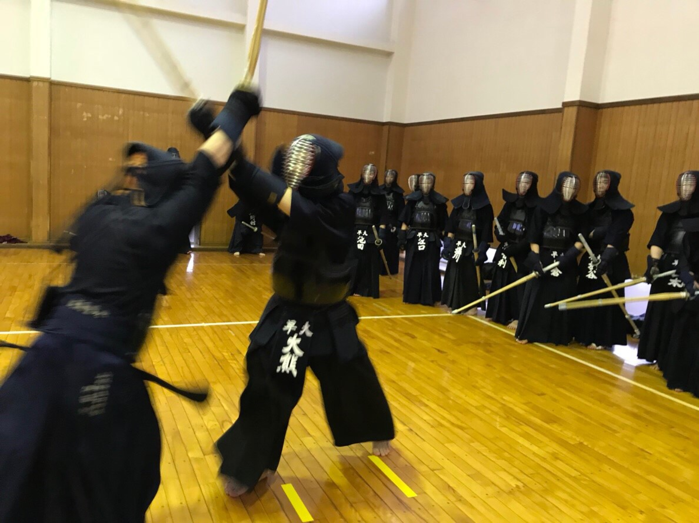

写真館【春合宿2019(3日目)】
春合宿3日目です
今日は二部練です。
今日で稽古最後だから頑張りましょう！
今日で稽古最後だから頑張りましょう！
遠くからカメラを発見する女子代と柔軟相手の佐々木
開脚が全くできてないのはヘルニアだったか何かの病気の長谷川
すでにお疲れ気味の及川
副将ズはやる気満々
こちらも関心・意欲・態度◎
こちらも関心・意欲・態度◎
お昼には青木、田中、今井が到着しました！
水野も今日から参加です！
午後練も頑張りましょう！
最後にジグザグをやりました！
なんと志願兵の多いことか...
なんと志願兵の多いことか...
初めての元立ちということでウキウキな方々

3日目の稽古は阿部先輩がいらっしゃっていたので元立ちをやってくださいました！
今日も恒例の班長ダッシュ開催です
前の人を突き飛ばす決定的瞬間を捉えました

水野は3位でお茶をゲット！
4位の今井は野菜ジュース。まあ悪くはないよね。
どっちを取ろうか吟味する村上を眺める最下位の長谷川
顔...
及川の顔だけガチ
勝ち組は飲み物の交換をしたりしてました。
藤田は今日で帰宅です
お疲れ様！
お疲れ様！
夜には八塚先輩、柴田先輩、壮真先輩が来てくださいました！
阿部先輩はミーティング後にお帰りです
ありがとうございました！
ありがとうございました！
今日から羽織ゲットです！
三上先輩、いろいろありがとうございました。
三上先輩、いろいろありがとうございました。
運命のチーム発表！
ベスト57期 縄田・青木・池田・大倉・長谷川
同率1位が5人というまさかの結果に
同率1位が5人というまさかの結果に
ワースト57期 青木
ベストよりワーストの方が喜んでるように見えたのは気のせい...?
ベストよりワーストの方が喜んでるように見えたのは気のせい...?
ベスト56期は我らが主将、佐野倉！
ワースト56期は藤浦
まあ当然の結果ですね。はい。
まあ当然の結果ですね。はい。
ベストOBは壮真先輩！
今年も壮真先輩に会計やってもらいたいです...
今年も壮真先輩に会計やってもらいたいです...
藤浦チーム「チーム大粗相」
伊藤チーム「サイゼリア」
橋場チーム「たあくんと・・・」
落合チーム「チーム余り」
栗原チーム「俺ら、持ってんだよな～」
佐野倉チーム「恥」
チーム名とメンバーはこんな感じでした！
4日目の様子は【こちら】
(写真館へのコメントは全て管理人がしております。)